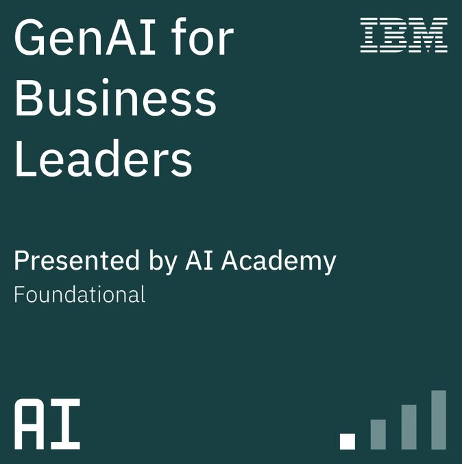
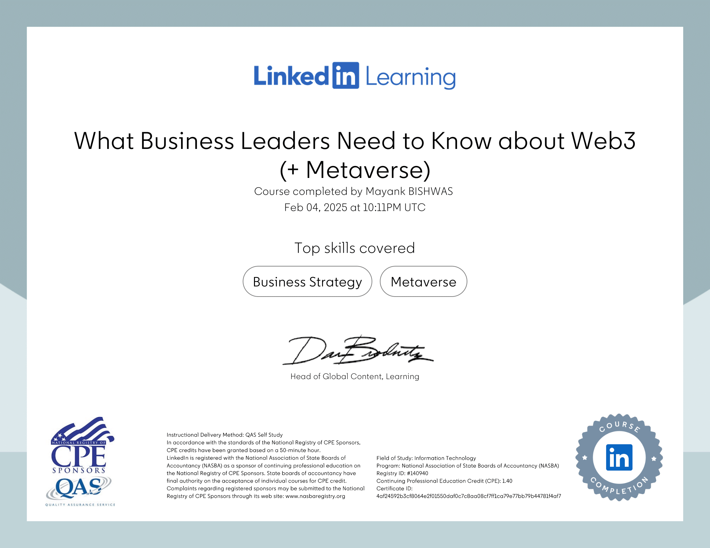
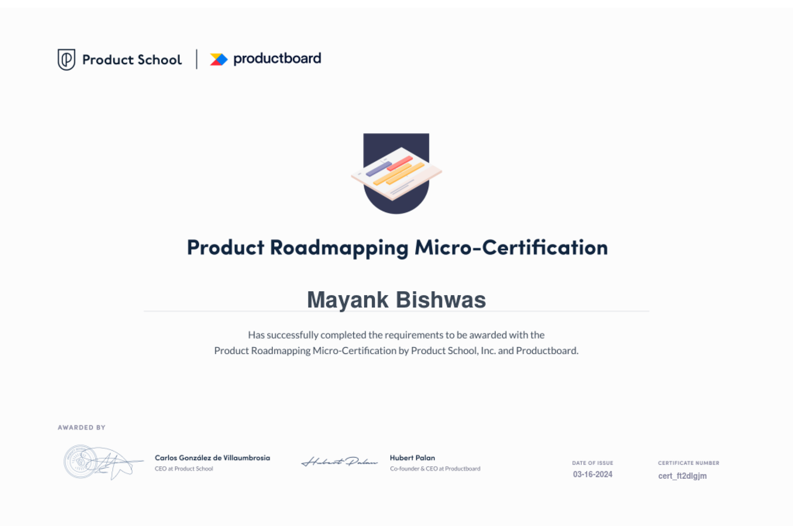
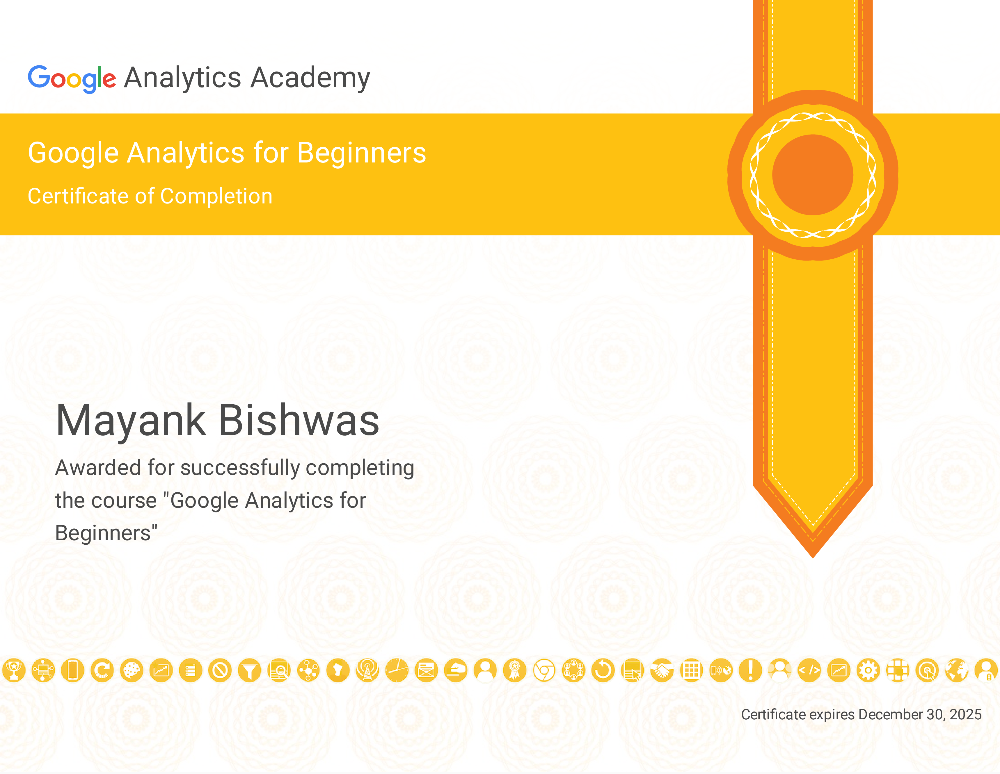

Certificates
While a skill — especially, soft ones — is best observed when witnessed first-hand, I believe certifications/badges do come in handy to invite attention. Below are some of mine, their associated skills, and my notes as well.
Tools


AI Visibility Essentials by Semrush

Skills: AI SEO, Generative Engine Optimization (GEO)
Show Credential >Responsive Web Design by freeCodeCamp
Credential ID: mayankbishwas-rwd
Show Credential >GenAI for Business Leaders by IBM

- Learn how to use data effectively for AI applications
- Explore ethical considerations and build trust in AI
- Apply AI to improve customer service and modernize applications
Design Thinking: Implementing the Process by PMI
- Defining the Problem & Goals
- Ideation, Prototyping & Implementation
- Design Thinking Challenges & Pitfalls
Skills: Design Thinking · Cross-Functional Team Building · Experience Mapping · User Journey · Dot Voting · User Persona · Brainstorm Facilitation · Storyboarding · Paper Prototyping · Usability Testing · User Story Mapping · Minimum Viable Product
What is Web3 by NASBA
Envisioned as the next evolution of the internet, Web3 (not Web 3.0), is where activities like posting content or making financial transactions may be tokenized and stored on the blockchain.
This course explores the fundamental Web3 concepts, decentralized technologies, and their potential impact on the Internet, finance, and society.
Skills: Web3 · Blockchain · Tokens · Cryptocurrency · NFT · DAOs (Decentralized Autonomous Organizations) · Smart Contracts · Consensus Mechanisms (Proof-of-Work & Proof-of-Stake)
Metaverse Basics for Business Leaders by NASBA

This course provides a foundational understanding of the metaverse and Web3. It explores the opportunities, challenges, and strategies for leveraging the metaverse in business operations, marketing, and community engagement.
Skills: Web3 · Metaverse · Metaverse Marketing Strategies · Metaverse Business Case Studies
Project Management Basics by PMI

The basics of the project management cycle, tools, and templates. Plus, the best practices to manage projects on time and within budget.
Read Notes >Skills: Project Management · Project Risk Assessment · Risk Registers · Kanban Board · Skill Matrix · Work Breakdown Structure (WBS)
Finance for Non-Financial Managers by NASBA
A primer in Financial Literacy to develop the acumen necessary to interpret financial reports and make decisions based on available data, manage inventory and receivables, create an accurate budget, and cost a product or service.
Read Notes >Skills: Financial Literacy · Reading Financial Report · Financial Ratio Analysis · DuPont Framework · Common-size financial statements · Receivables Management · Inventory Management · Pricing a Product or Service · Income Tax Basics
Technology for Product Managers by PMI
This course is a primer on tech basics for PMs to speak to engineers, UX designers, and executives. It further includes desktop, web, and mobile development, and reviews the role of version control systems in deployment and release.
Read Notes >Skills: Internet and browser · Client-Server Model · Components of a Webpage · APIs and Postman · Software fundamentals · Web development · Data management · Desktop development · Mobile development · Version control
Product Strategy by Product School
- Building a Product Strategy
- Communicating a Product Strategy
- Crafting an advanced Product Strategy
Skills: Market Analysis · Customer Analysis · Vision & Mission · OKRS (Objectives and Key Results) · Roadmap · Prioritization · Communication Plan
Product Roadmapping by Product School

- What & Why of Product Roadmapping
- Steps for creating Product Roadmaps
- Executing and tracking Product Roadmap
Skills: Mission & Vision · 3Ps Framework · Roadmapping Maturity · Prioritization (MoSCoW and RICE) · Roadmap · Roadmap Types · Components of a Roadmap · Crafting Stories/Epics
Product Management Basics by Pendo x Mind the Product
The course covered the fundamentals of the product manager role, best practices, and tools through each stage of the Product Management Life Cycle.
Read Notes >Skills: Product Team · Product Tech-stack · Product Management Life Cycle · Double Diamond framework · Card Sorting · Pricing Research Method (Van Westendorp and Gabor-Granger) · A/B Test · Fake-door Test · MVP
Analytics Beginners by Google

Introduction to Generative AI by Google
- Define Generative AI
- Explain how Generative AI works
- Describe Generative AI Model Types
- Describe Generative AI Applications